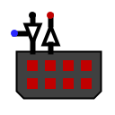

Port I/O
Port I/O
| Librairie : | Entrée/Sortie |
| Introduction :: | 3.2.0 |
| Apparence : |  |
Comportement
Broches
Attributs
Lorsque le composant est sélectionné ou en cours d'ajout, les touches fléchées modifient son attribut Orientation.
- Orientation
- L'emplacement de la broche de sortie par rapport au composant.
- Étiquette
- Le texte de l'étiquette associée au composant.
- Emplacement de l'étiquette
- L'emplacement de l'étiquette par rapport au composant.
- Police de l'étiquette
- La police de caractères avec laquelle l'étiquette doit être affichée.
- Couleur de l'étiquette
- La couleur avec laquelle l'étiquette doit être dessinée.
- Étiquette Visible
- Détermine si l'étiquette est visible ou non.
- Number of pins
- Determines the number of pins in the component
- Port type
-
Input onlyAll pins are inputs.
Output onlyAll pins are output.
Output single enablepins can be inputs or outputs, with an enable input to authorize the output.
Output per-bit enablepins can be inputs or outputs, with one enable input per output bit to authorize the output.
Comportement de l'outil pousser
When the mouse button is pressed, the component output is adjusted according to the Logic level property.
Comportement de l'outil text
Permet de modifier l'étiquette associée au composant.
Retour à Référence de la bibliothèque